Glass
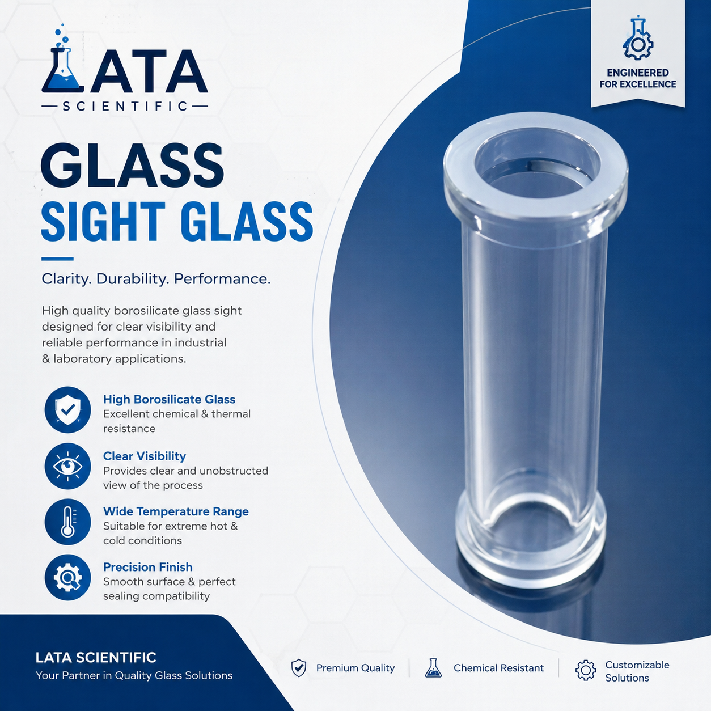
Full catalogue
Two catalogues under one quality standard — precision borosilicate glass and hygienic fluid-transfer components. Pick a category to see its products, specs and brochures.
Glass & process equipment

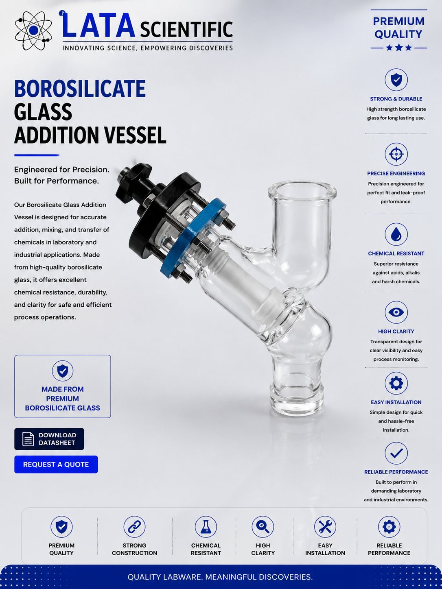
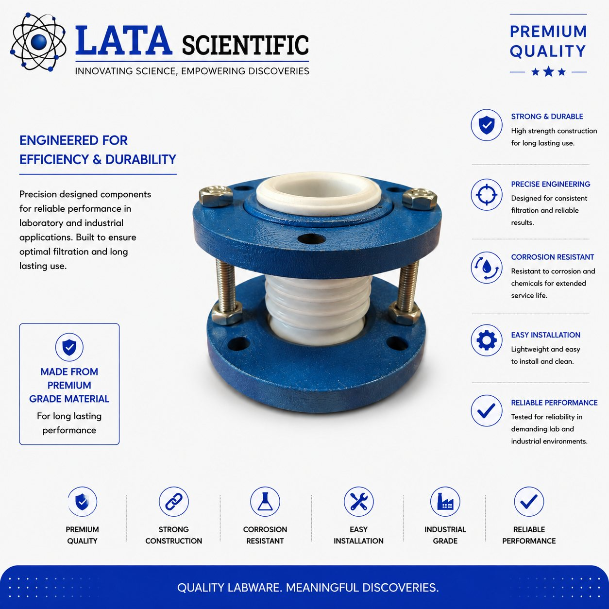
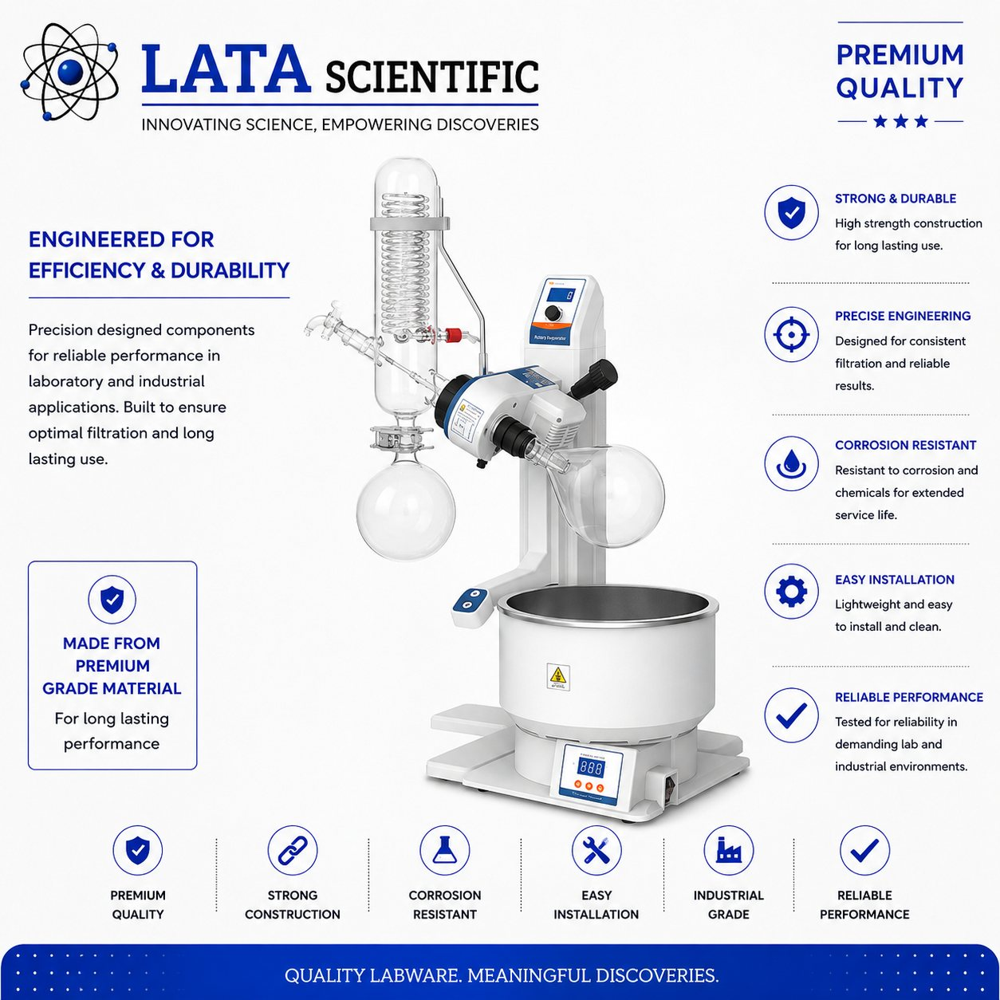
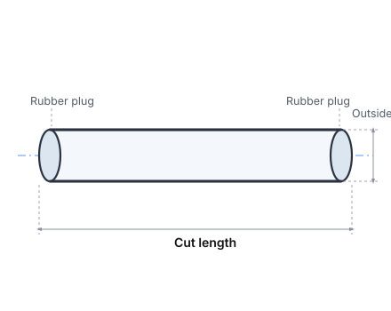
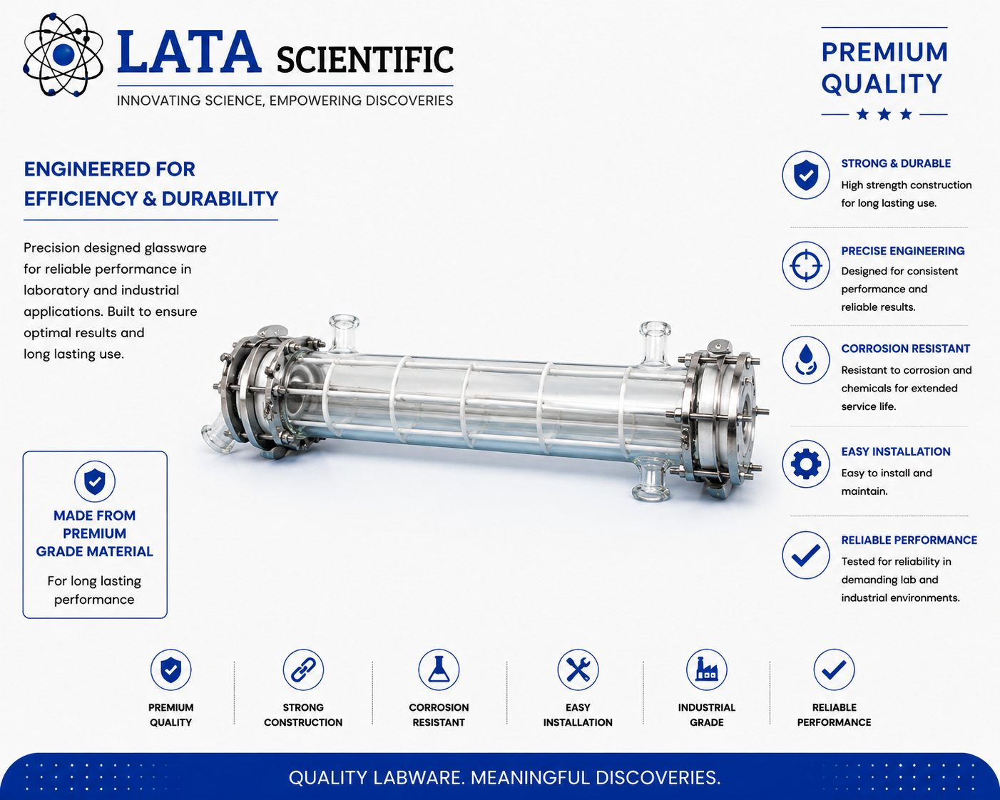
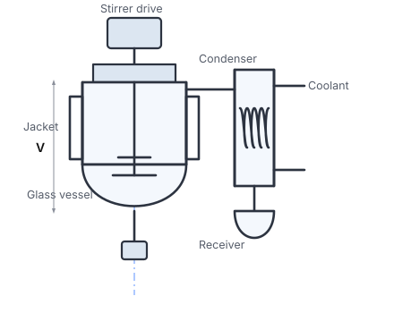
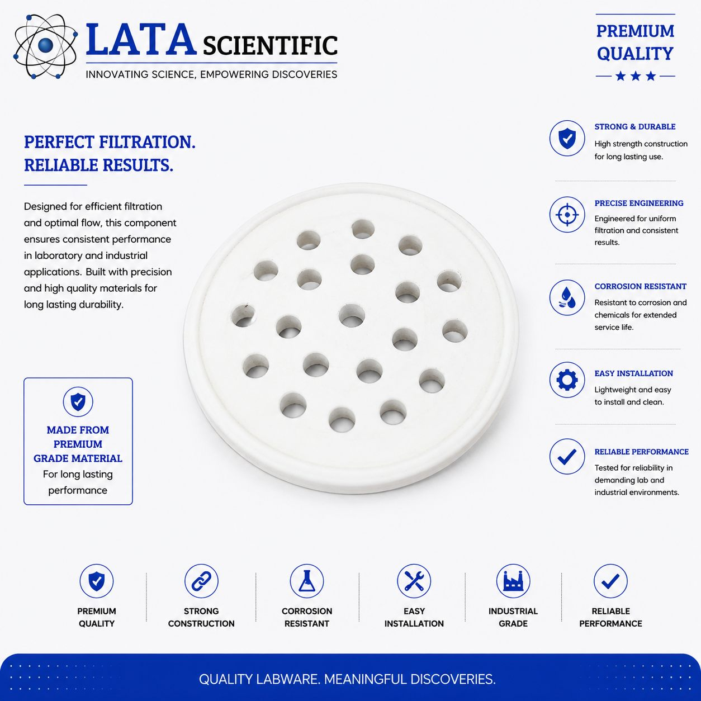
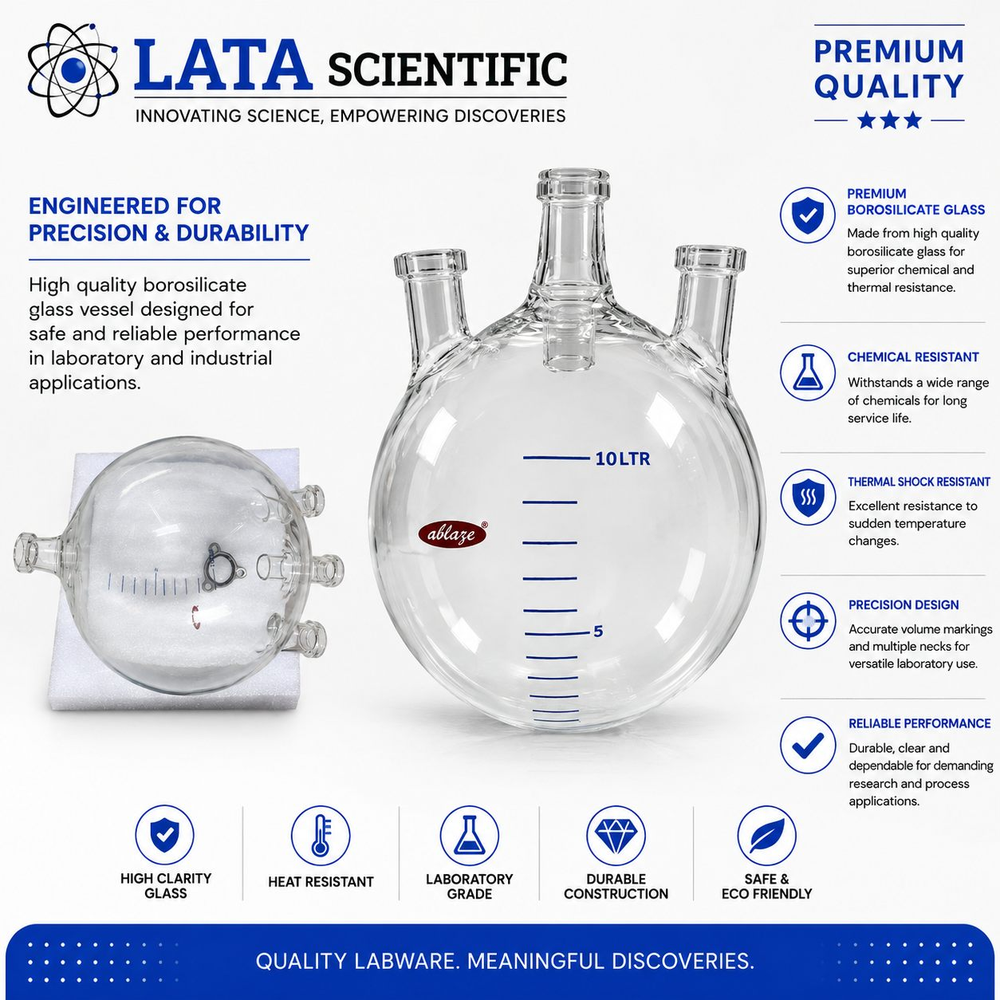
Fluid transfer & fittings
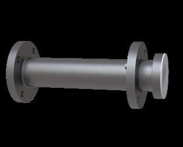
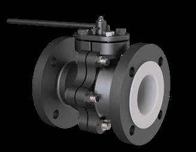
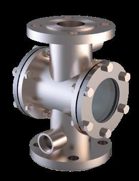
Send your requirement — media, temperature, pressure, dimensions — and we'll recommend the right product or fabricate it.
Talk to an engineer